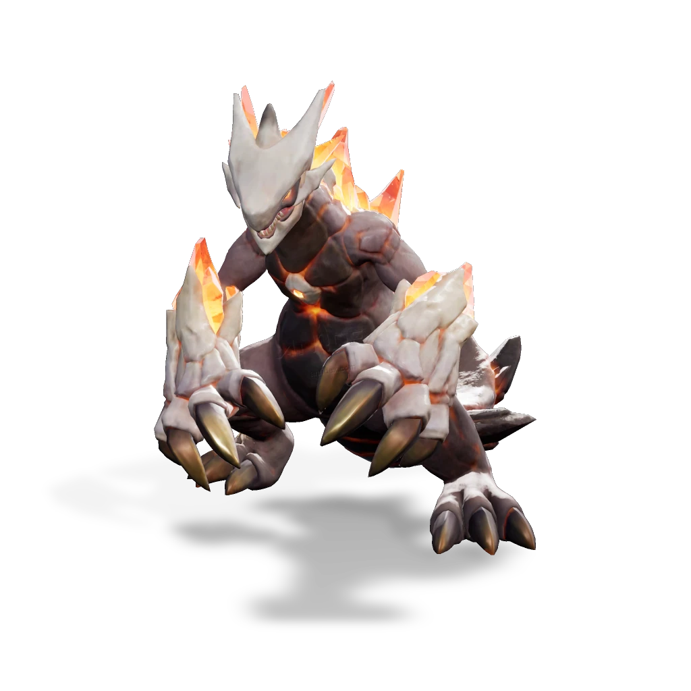

รายชื่อ Aniimo › #072

กิ้งก่าจ้าวแม็กมา (Magmarex)
#072ธาตุไฟ / ดินNovaBreakTier B
คริสตัลร้อนแรงงอกบนตัวเหมือนลาวาที่แข็งตัว ถ้าความร้อนที่สะสมไว้ปะทุออกมา จะหลอมละลายทุกอย่างที่ขวางหน้า
ดูรายละเอียดเต็ม ร่างพิเศษ และร่างเปล่งประกายค่าสถานะพื้นฐาน
| HP | 110 |
|---|---|
| ATK | 91 |
| P.DEF | 70 |
| M.DEF | 89 |
| REGEN | 75 |
| BREAK | 104 |
สกิล
| โจมตีปกติ | ATK ไฟ (BREAK) ใช้พลังไฟโจมตีเป้าหมายระยะประชิด |
| สกิล 1 | Lava Breath ไฟ พ่นไฟใส่เป้าหมายด้านหน้า ทำดาเมจต่อเนื่องและติด [Fire Debuff] ให้เป้าหมายที่โดน |
| สกิล 2 | Lava Punch ไฟ พุ่งไปข้างหน้าพร้อมหมัด ทำดาเมจและทะลุเป้าหมาย พร้อมล้าง [Fire Debuff] ทั้งหมดบนเป้าหมาย แต่ละสแต็กทำดาเมจเพิ่ม 5% ของพลัง |
| สกิล 3 | Magma Surge ไฟ ตอกกรงเล็บทั้งสองลงดิน ทำให้คริสตัลใต้ดินปะทุเป็นแมกมา หนามหลอมเหลวรูปกรวยพุ่งไปข้างหน้าทำดาเมจ ถ้าโดนเป้าหมายที่มี [Fire Debuff] มากกว่า 5 สแต็ก จะ [stuns] 3.5 วินาที |
| อัลติเมต | Burning Sun ไฟ คริสตัลที่ข้อศอกปะทุพลังแมกมา ขว้างหินหลอมเหลวขนาดใหญ่ที่ระเบิดทำดาเมจวงกว้าง ดาเมจเพิ่ม 2% ต่อ [Fire Debuff] แต่ละสแต็กบนเป้าหมาย |
สายวิวัฒนาการ
- กิ้งก่าลาวา → กิ้งก่าจ้าวแม็กมา (Aniimo เลเวล 48, แช่ในบ่อน้ำพุร้อน, ชนะ Alpha Magmarex)
จุดเกิด
- Zephyrus Landbridge Lv. 47–57
Held Item ที่แนะนำ
- Gargantuan Horn Aniimo ที่สวมใส่ได้ BREAK เพิ่ม 0.7 ต่อเลเวล
งานใน Homeland
งานธาตุไฟ Lv.3, งานธาตุดิน Lv.2, ขนของ Lv.3